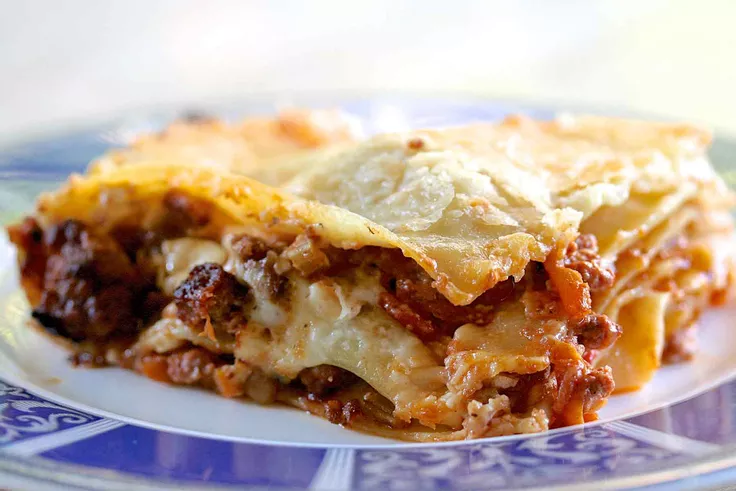

Lasagna Recipe

Lasagne Verdi alla Bolognese
This is an adaptation of the official lasagne from
the Bolognese Chamber of Commerce. I've made a couple of
changes suggested to me by people from the area, such
as which meat and wine to use or if there should be milk
added or not. One thing never in question, though, is the
green lasagne sheets. These are a must. The ragu is an
authentic sauce, simple without garlic or herbs and spices.
Using fresh pasta keeps you from having to pre-boil it.
Ingredients
- 1 tbsp olive oil
- 1 onion, diced
- 1 carrot, diced
- 1 celery stalk, diced
- 2 garlic cloves, finely sliced
- 250g beef mince
- 250g pork mince
- 1 tbsp tomato purée
- 400g tin chopped tomatoes
- 200ml beef stock
- 200ml red wine
- 1 tsp Worcestershire sauce
- 9-12 lasagne sheets (depending on the size of your baking dish)
- 50g Parmesan, grated
- 150g pack mozzarella, shredded
For the white sauce
- 50g butter
- 50g plain flour
- 550ml semi-skimmed milk